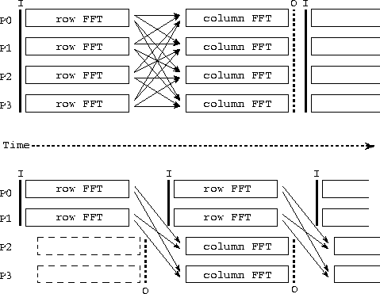
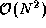

![[DBPP]](pictures//asm_color_tiny.gif)


![[Search]](pictures//search_motif.gif)
In the remainder of this chapter, we apply the modular design
techniques discussed in preceding sections in three case studies. We
start with an example from image processing, which we
use to study design tradeoffs that can arise when constructing
parallel programs from several components. We consider the problem of
applying a series of convolution
operations to a sequence
of images. Images, represented as arrays of size
N
 N
, are input in pairs on streams A
and
B
; convolution generates a new array of the same size that is output
on stream C
(Figure 4.4). A single convolution
operation involves the transformation of two input arrays using
independent two-dimensional fast Fourier transforms (2-D FFTs), a
pointwise multiplication of the two transformed arrays, and the
transformation of the resulting array using an inverse 2-D FFT,
thereby generating an output array. A 2-D FFT performs 1-D FFTs first
on each row and then on each column of an array. A 1-D Fourier
transform, , of a sequence of N
values,
, is given by
N
, are input in pairs on streams A
and
B
; convolution generates a new array of the same size that is output
on stream C
(Figure 4.4). A single convolution
operation involves the transformation of two input arrays using
independent two-dimensional fast Fourier transforms (2-D FFTs), a
pointwise multiplication of the two transformed arrays, and the
transformation of the resulting array using an inverse 2-D FFT,
thereby generating an output array. A 2-D FFT performs 1-D FFTs first
on each row and then on each column of an array. A 1-D Fourier
transform, , of a sequence of N
values,
, is given by
where . The FFT exploits symmetry to perform this
computation in  steps, each involving
steps, each involving  operations.
operations.
Figure 4.4: Dataflow diagram for an image-processing pipeline.
Two streams of images, A
and B
, are passed through FFT
modules and then into an inverse FFT module, which first multiplies
them and then applies an inverse FFT.
We first consider the three components from which the convolution algorithm is constructed: forward 2-D FFT, multiplication, and inverse 2-D FFT. The pointwise multiplication is the simplest: Its communication requirements are zero as long as the arrays on which it operates have the same data distribution.

Figure 4.5: Two parallel algorithms for computing a series of
2-D FFTs. In each case, the activity on each of four
processors (P0--3) is shown over time, with arrows denoting communication and I
and O denoting input and output operations. The algorithm illustrated
in the upper part of the figure is a sequential composition of program
components that perform 1-D FFTs, first on rows and then on columns of
each input 2-D array; all-to-all communication is required to
transpose the array after performing row FFTs and before performing
column FFTs. In the second algorithm, data flow from a first set of
processors performing row FFTs (P0, P1) to a second set performing
column FFTs (P2, P3). Communication is required to move data from P0
and P1 to P2 and P3.
A variety of parallel algorithms are possible for the forward and inverse 2-D FFTs. A fine-grained algorithm can exploit concurrency within the 1-D FFTs performed on individual rows and columns of the input array, at the cost of considerable communication. A more coarse-grained algorithm performs independent 1-D FFTs in parallel, thereby avoiding a need for communication within the 1-D FFTs, but requiring communication when moving from a row-based to a column-based decomposition. We consider two algorithms based on the latter strategy. The first processes the input image stream sequentially, performing row FFTs and then column FFTs on each image in turn. The second algorithm pipelines the image stream, performing column FFTs for one image in parallel with the row FFTs for the next (Figure 4.5). These two algorithms are in effect sequential and parallel compositions, respectively, of code fragments that perform 1-D FFTs on the rows and columns of a two-dimensional array.
The first parallel algorithm is termed the transpose
algorithm, since it performs a series of one-dimensional transforms on
P
processors while the array is partitioned in one dimension,
then transposes the array and performs transforms in the second
dimension using the same processors. The transpose operation requires
that each processor send one message of size  to each of the
P-1
other processors. Hence, total communication costs summed
over P
processors are
to each of the
P-1
other processors. Hence, total communication costs summed
over P
processors are
The second algorithm is termed the pipeline algorithm, since it partitions processors into two sets of size P/2 which perform FFTs on rows and columns, respectively. Each processor in the first set must communicate with each processor in the other set, for a total of messages. The entire array is communicated. Hence, total communication costs are
Notice that communication costs are not necessarily distributed
equally among processors in the second algorithm, since the sending and
receiving processors form distinct groups. Nevertheless,
Equations 4.1 and 4.2 give a rough idea of the
relative performance of the two algorithms. The second algorithm
sends significantly fewer messages and hence should be more efficient
in situations in which message startup costs are dominant, for example,
when N
and/or  are small or when
P
or
are small or when
P
or  are large. On the other hand, the first algorithm
probably incurs lower data transfer costs and hence may be superior in
other situations.
are large. On the other hand, the first algorithm
probably incurs lower data transfer costs and hence may be superior in
other situations.
Having designed two alternative algorithms for the 2-D FFT, we now consider the parallel convolution algorithm proper. Its four components---two parallel 2-D FFTs, one matrix multiplication, and one inverse 2-D FFT (Figure 4.4)---can be combined using either sequential or parallel composition. If sequential composition is used, the parallel convolution algorithm can be represented as follows, with the fft and fft calls invoking the transpose 2-D parallel FFT.
for each imageA
= fft(A)
B
= fft(B)
C = A
.B

C = fft
(C
)
endfor
If the input to this algorithm is decomposed appropriately (in one dimension, by rows), then because each FFT involves a transpose, total communication requirements are three times the cost of a single transpose:
Notice that because the forward FFT operates first on rows and then on columns, the inverse FFT must operate first on columns and then on rows, so as to avoid the need for an additional transpose operation between the forward and inverse FFTs.
If parallel composition is used, the three FFTs execute concurrently, each on one third of the available processors. (Because the multiplication involves  rather than operations, we regard it as insignificant and compose it sequentially with the inverse FFT.) Communication costing is required to move data from the processors handling the forward FFTs to the processors handling the inverse FFT.
The 2-D FFTs within the parallel composition can be implemented by using either the transpose or pipeline algorithms, yielding two algorithm variants. Costs are as specified by Equations 4.1 and 4.2, except that each algorithm is executed three times, with P/3 rather than P processors involved in each execution. Combining these costs with the cost of the data movement between components, we obtain the following models.
Table 4.1: Approximate total message counts and data volumes for
three parallel convolution algorithms, summed over P
processors
and assuming that P
is reasonably large.
Figure 4.6: Performance of the sequential/transpose (Sequential)
and parallel/transpose (Parallel) convolution algorithms on an IBM
SP computer for different problem sizes and numbers of processors.
The latter algorithm is more efficient for smaller problems and larger
numbers of processors.
The results of this brief analysis are summarized in Table 4.1. We see that the second and third algorithms perform fewer message startups but send more data. Hence, they can be expected to be more efficient on smaller problems and larger numbers of processors. This result can be confirmed experimentally, as illustrated in Figure 4.6. A flexible parallel program might incorporate all three algorithms and select the appropriate alternative at runtime. Of course, a programming tool that supports only sequential composition will allow only the first algorithm to be used.
The convolution problem illustrates the design tradeoffs that can arise when constructing even relatively simple parallel programs. These tradeoffs can arise at multiple levels. First, we must identify candidate parallel algorithms for the component modules: in this case, the 2-D FFT. Then, we must decide how to compose these building blocks so as to construct a complete parallel algorithm. Aspects of the complete design in turn influence the techniques used within components, requiring for example that we operate on columns before rows in the inverse FFT. The performance analysis must take into account all these design decisions.
© Copyright 1995 by Ian Foster